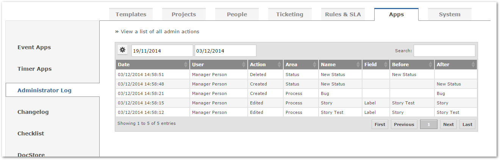
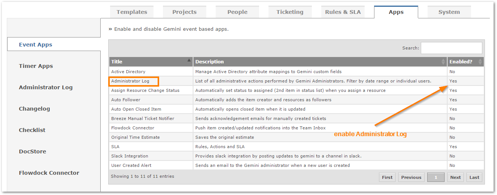
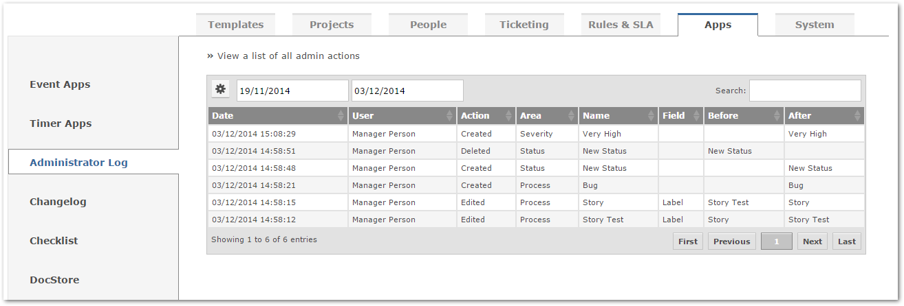
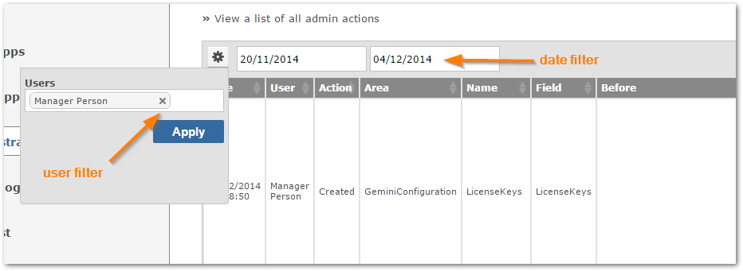

Administrators can now view a full change log of all administrative actions performed in Gemini.

Ensure the Administrator Log app within Gemini is enabled.

Every administrative action will now appear in the log.

You can filter by date range and users.
